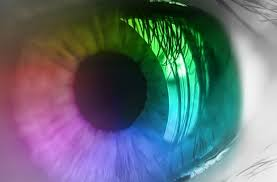

La terapia visuo-cognitiva es el conjunto de ejercicios, que sirve para mejorar la capacidad visual del paciente, de forma que se hace consciente para aprender a utilizar estos procesos cerebrales que le permiten obtener la mayor cantidad de información posible y eficazmente controlar los músculos oculares logrando mejoría en su visión binocular.
Es recomendable en pacientes con:
- Problemas de Aprendizaje
- Parálisis Cerebral
- Síndrome de Down
- Desórdenes de procesos de Información Visual
- Estrabismo
- Ambliopía
Síntomas
Estos síntomas son un punto de partida para determinar cuando una persona requiere una evaluación optométrica funcional; y/o necesiten terapia visual, aunque algunas veces pueden no estar ligados y aun así pueden mejorar.
- Cierra o se cubre un ojo
- Dificultad en vista lejana
- Parpadeo Frecuente
- Ladea la cabeza al leer
- Confunde letras o palabras
- Pierde el lugar cuando lee
- Baja lectura de comprensión
- Dificultad con la memoria
- Poca coordinación motriz
Terapia con Luz de Color
Es una estimulación sensorial que se da a través de el camino retino hipotalámico llegando a la glándula pineal, que se encarga de el equilibrio químico hormonal, sirve, para estimular la bioquímica del cerebro a través de sistema visual por medio del equilibrio del sistema simpático y parasimpático; logrando mejoría en habilidades visuales disminuidas, indicado en pacientes con ambliopías, estrabismos, problemas de aprendizaje, bajo tono muscular, procesos inflamatorios agudos, problemas gastrointestinales, síndrome de fatiga emocional, coadyuvantes fibromialgias, epilepsia, apoyo de otros tipos de terapia como emocionales y terapia de lenguaje, por mencionar algunos.
La importancia de las habilidades visuales radica en que el 80% de lo qué el niño aprende en la escuela se procesa a través del sistema visual, incluso un problema de proceso visual de menor importancia, interferirá en un niño o adulto al tratar de desarrollar su potencial.
